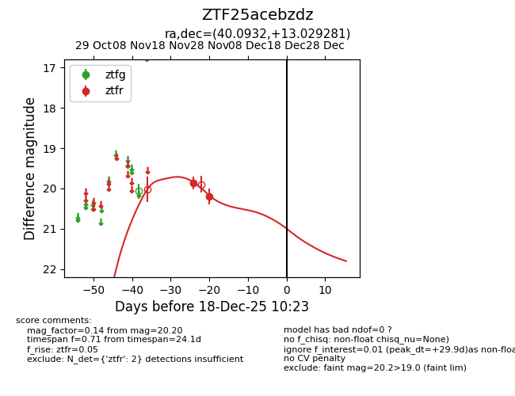
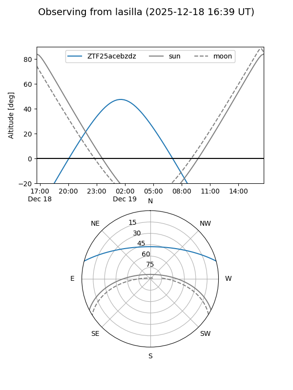
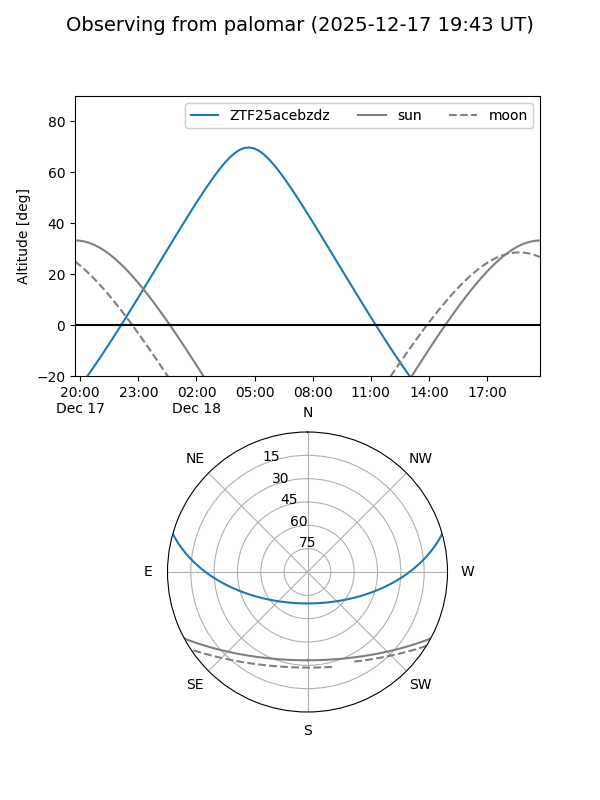

ZTF25acebzdz
Target ZTF25acebzdz at 2025-12-18 11:17
Aliases and brokers:
FINK: fink-portal.org/ZTF25acebzdz
Lasair: lasair-ztf.lsst.ac.uk/objects/ZTF25acebzdz
ALeRCE: alerce.online/object/ZTF25acebzdz
alt names
ZTF25acebzdz (ztf,fink_ztf)
Coordinates:
equatorial (ra, dec) = 40.0932,+13.02928
equatorial (HMS+DMS) = 02:40:22.36,+13:01:45.41
galactic (l, b) = (159.7467,-41.92495)
Photometry
last ztfr=20.20
2 ztfr detections
Lightcurve

Visibility


Additional plots